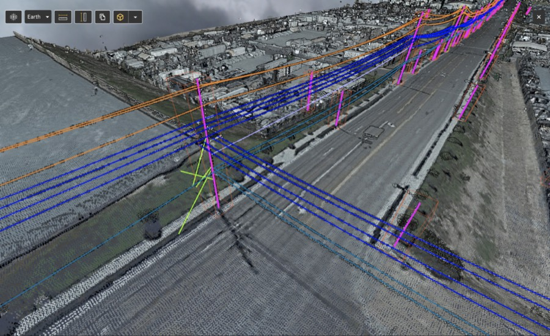
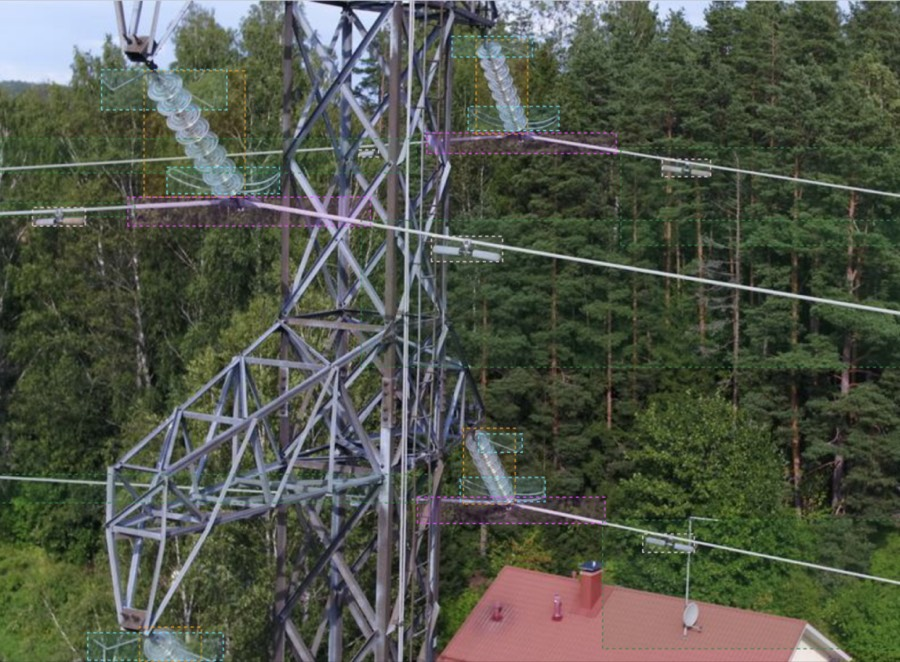

60.205° N, 24.655° E · Espoo, Finland
Lead Software Engineer & Frontend Architect
An experienced full-stack engineer with a passion for crafting complex web products and carrying them all the way to delivery.
00 / About
I take a hard product problem and turn it into an application that is fast, reliable and pleasant to work on.
I'm a Lead Frontend Architect and full-stack engineer with 10+ years of experience building complex, high-performance web applications. For the last 8 years I have owned the frontend technical direction of a geospatial platform at Sharper Shape: maps, 3D point clouds, high-resolution imagery, ~286,000 lines of TypeScript.
01 / What I bring
Strengths, proven in production
- Chose and owned the tech stack the platform is built on, and shaped long-term frontend strategy together with product and business
- Split and assigned work across developers, mentored engineers and contractors as the team grew from 2 devs, and was the person other leads consulted on technical and business questions
- Worked directly with backend and department leads on cross-team decisions, well beyond my formal responsibilities
- Led project teams end to end: scoping, estimation, client communication and delivery
- Set technical direction, code standards and development practices as the senior engineer on each engagement, for clients like Webflow, Edenred and YIT
- Mentored developers beyond our own team: coached client companies' engineers and ran workshops on modern frontend practices
- Owned the frontend technical direction end to end for 8 years, from architecture decisions to how engineering work supports the business
- Designed and built the web UI of a search engine for public procurement: React/Redux frontend with server-side rendering for SEO, and contributed across the stack up to the Node.js backend
- Owned the frontend across a product line of satellite navigation software: a complex SPA inside a large ASP.NET MVC product, its mobile web version, and native Android and iOS companion apps
- Broke a monolithic frontend (WebCORE) into specialized apps (Editor, Admin Control, Inspector), which gave us faster releases and better maintainability
- Created Sharper Shell, a modular container architecture for running multiple frontend apps together
- Defined the state management patterns and modular design principles used across all apps: ~286,000 lines of TypeScript kept healthy and legacy-free for 8 years
- Responsible for the overall frontend architecture across company products: fast, stable, flexible, easy to extend
- Built production Node.js services: PDF rendering with a headless browser, REST services and GraphQL
- Node.js backend work with server-side rendering, async routing and code splitting for fast initial loads
- Shipped production code in C#, Java, Objective-C, Swift and C: native Android and iOS apps, real-time computer vision software. Picking up a new stack is not a risk for me
- Optimized the build process end to end: webpack to Vite (esbuild, now Rolldown), tuned GitHub workflows, cut build times drastically
- Moved linting and type-checking to Rust and Go based tools (Biome, tsgo) so everyday feedback loops stay near-instant
- One of my main goals was to make the project a happy place to work in, and I think I succeeded
- An agent-based E2E pipeline with 100+ Playwright specs running across customer environments, with auto-generated documentation
- Testing at every level: Mocha + Enzyme for UI unit tests, WebdriverIO integration tests in real browsers, cloud cross-browser testing via Sauce Labs
- Component-driven development with Storybook and an interactive living styleguide
- Supported Webflow's US team during their React migration, mainly on the testing side
- Built an agent-based E2E testing pipeline where AI agents observe the live UI before writing Playwright tests, with a secure credential model and CI fan-out across customer environments
- Integrated MCP servers for ticketing, error monitoring and browser automation into the development loop
- Built multi-model agent orchestration on Claude Code and set up the team's context engineering practices, always with human review and verification habits
- Built a map engine on Mapbox GL JS with real-time geospatial editing
- Developed 3D point cloud rendering (Potree, three.js) and a high-resolution image system (OpenSeadragon) with a React annotation engine
- Eight years of making the browser render heavy things fast, at production quality, for daily users
02 / Selected work
Real-time geospatial map editing
The map is not a picture, it is the primary editing surface.
Utility companies inspect and manage physical infrastructure (power lines, poles, equipment) through Sharper Shape's platform.
The map engine on Mapbox GL JS with real-time geospatial editing: drawing and modifying assets directly on the map, custom rendering for large datasets, and the interaction patterns that keep editing precise at any zoom level.
The engine powers the platform's Editor application, used daily by utility-sector customers.
02 / Selected work
3D point clouds & high-resolution imagery
Gigabyte-scale visual data, explorable in a browser tab.
Inspection data arrives as massive 3D point cloud scans and ultra-high-resolution photos. Both must be explorable in the browser, fast.
3D point cloud rendering built on Potree and three.js, a high-resolution image system on OpenSeadragon, and a React-based annotation engine that overlays structured metadata on imagery. I have also experimented with rendering point clouds inside Mapbox itself.
Inspectors work with gigabyte-scale visual data in a browser tab, with annotation tools on top.
External example from potree.org, loaded only on click so the page stays fast. In this preview it opens in a new tab; on the deployed site it plays right here.
02 / Selected work
AI-driven engineering workflows
Tests that see the product the way users do.
UI test automation usually rots: tests written from source code break with every refactor. We wanted tests that see the product the way users do, and an AI workflow the team can trust.
An agent-based E2E pipeline where AI agents observe the live product in a real browser before writing Playwright tests, producing user-behavior-driven specs that survive refactors. Around it: a secure credential model, CI fan-out across customer environments, MCP server integrations (ticketing, error monitoring, browser automation) and multi-model orchestration where a stronger model plans and reviews while a cheaper one implements.
100+ specs across environments with auto-generated human-readable documentation. The lesson I keep repeating: a good architecture foundation is the key for these AI tools.
02 / Selected work
Developer experience at scale
Eight years, no legacy corners.
A ~286,000-line TypeScript monorepo that grew for 8 years without accumulating legacy, because keeping it pleasant to work in was treated as a real goal.
Broke a monolithic frontend into specialized apps and created Sharper Shell, a modular container architecture for running them together. Migrated the toolchain from webpack to Vite (esbuild, now Rolldown), tuned GitHub workflows, cut build times drastically, and moved linting and type-checking to Rust and Go based tools.
Near-instant feedback loops and a codebase with no legacy corners. One of my main goals was to make the project a happy place to work in, and I think I succeeded.
03 / In production
The platform, publicly
These are from Sharper Shape's public materials: the product my map, point cloud and imagery engines render every day.


© Sharper Shape · from public materials at sharpershape.com
04 / Writing & side projects
Off the clock
I occasionally write about frontend engineering, and games were my early love: I read Jesse Schell's The Art of Game Design back in the days and built my own small Android game.